Lansing to Miami, the Bay Area and back
Twenty-five years, nine newsrooms.
I have run coverage of a president's funeral, hurricanes and tropical storms, California flood events, the largest firestorms in state history, and the morning the Bay Area sky turned orange. I have launched a 24-hour streaming channel, a lifestyle show and two newsletters, and experimented early with OTT. The work is always the same: decide what matters, get the right people to it, and make sure the audience can find it.

25
Years leading and developing multiplatform newsrooms.
9
Newsrooms. Major, mid and small markets, coast to coast.
2
Top-10 markets, plus two top-15 markets.
5+
Years in California. Culture, politics, fire, quakes, immigration.
Miami–Ft. Lauderdale · WFOR, CBS News Miami · 2021–2023
We turned it into an impact-first newsroom
A top-15 market, a 100+ employee operation, and one of the busiest hurricane and breaking-news markets in the country.
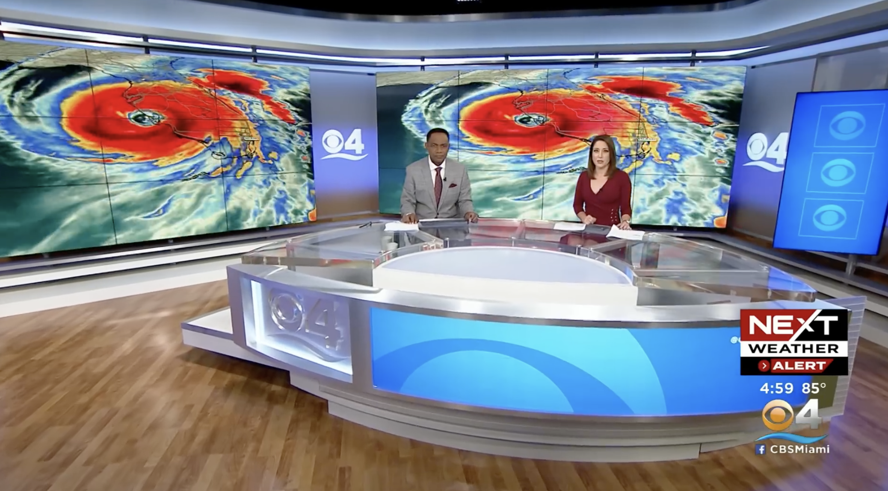
The impact filter
We shifted coverage away from commodity crime and press-release stories toward accountability journalism. The 11 p.m. newscast climbed to #1 in the market.
The 24-hour stream
I oversaw the launch of the 24-hour CBS News Miami streaming channel: staffing models, workflows, original programming and daily editorial execution.
The weather department
I oversaw the weather department, directing its focus toward high-impact disruptive-weather storytelling and helping launch a new hyper-local weather brand for South Florida.
Rebuilding capacity
30+ employees recruited, hired and onboarded during my tenure, rapidly rebuilding newsroom depth, plus coaching anchors and reporters toward original storytelling.
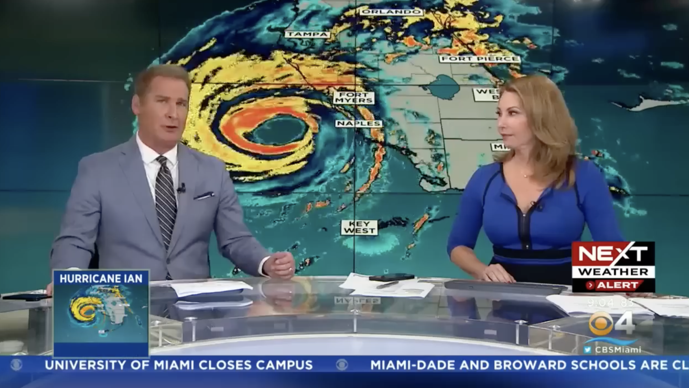

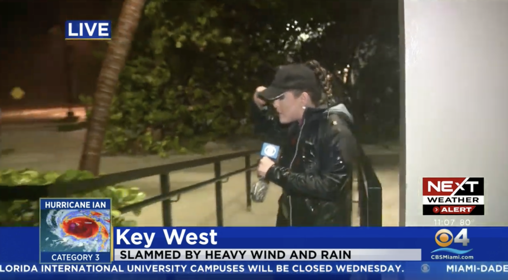
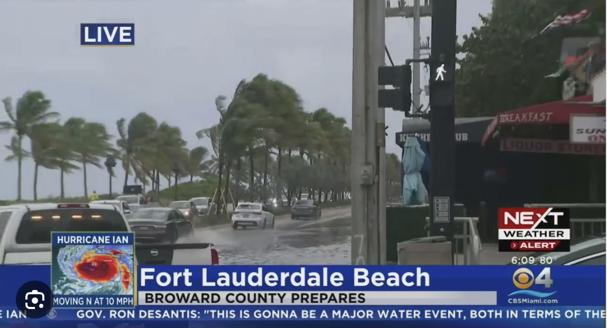

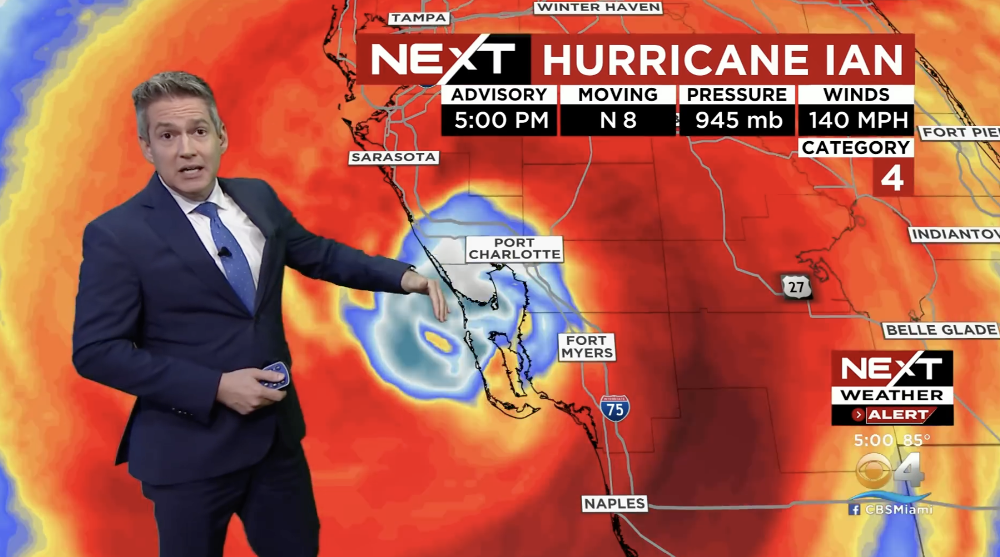

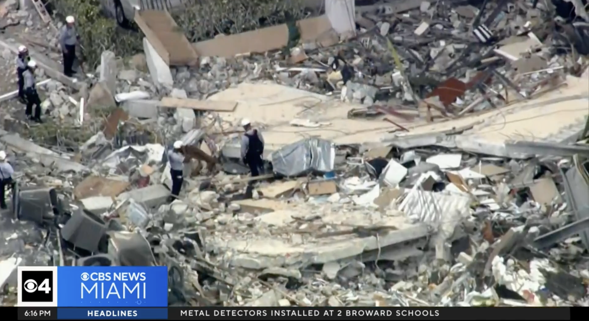
For the Surfside anniversary we built a full week of coverage plus 24 hours of stories from across the year, and gave an entire weekend of the stream over to it.
Original programming for the stream
Headliners
A stream-only weekly review I conceptualized and launched in two weeks. Proof that a 24-hour channel needs its own programming, not just repeats of the broadcast.

Election night · 2022
Results people could actually use
We rebuilt election coverage around real-time data and our politics team, with interactive results on air and on every platform, so viewers could follow the race they cared about instead of waiting for it to come around again.
The same instinct produced WKAR's Election 2026 four years later.

2022 elections · CBS News Miami
Grand Rapids · WOOD TV8 · eight years
Every seat in the building
Intern, producer, executive producer, assistant news director. I learned every job in the newsroom before I ever ran one.
West Michigan is home. Grand Rapids is where I am from, and where the career started. An internship at WOOD turned into a full-time job before I graduated. I worked overnights, drove eighty miles each way, then drove back to school in the morning. I became the station's youngest assistant news director, then was promoted out of WOOD to WISH-TV in Indianapolis, LIN TV's flagship station at the time, where I was again the youngest ever in the job. Thrown into rooms I probably had no business being in yet.
I made a lot of mistakes there, and I learned from every one of them. Eight years in one building, moving up through every seat in it. That is where I learned what a newsroom costs to run. Not from a management course, but from having done each of those jobs myself first.
The marquee assignment · A president comes home
Gerald R. Ford was Grand Rapids' own. I directed coverage of his death, his funeral and his homecoming. Days of continuous, nationally-attended coverage in the city that raised him, with the whole newsroom deployed across the state and Washington.
It taught me what sustained coverage really costs: not one big day, but a plan that survives the fifth day, the crew rotation, the live window nobody scheduled, and the moment the story stops being national and becomes local grief.


San Francisco Bay Area · NBC Bay Area · 2016–2021
Fire, fog and the orange morning
Executive producer of Today in the Bay, the flagship weekday newscast in one of NBC's most competitive local newsrooms.


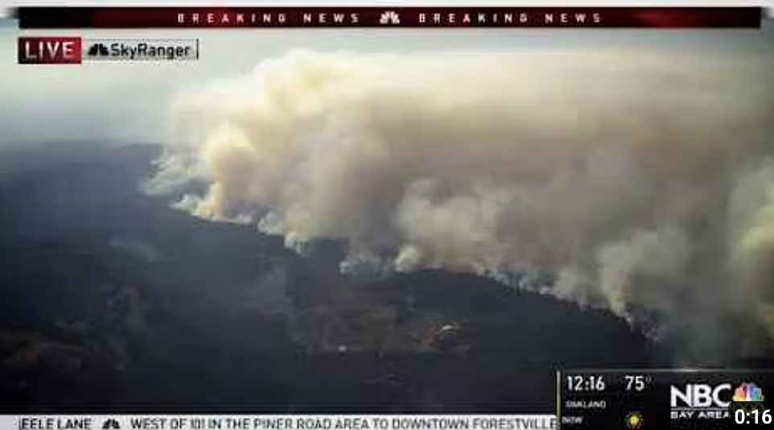


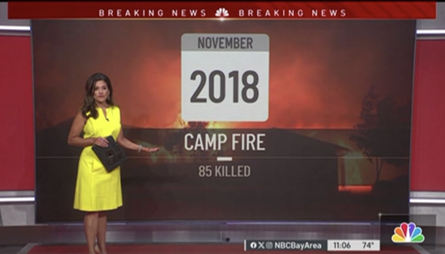
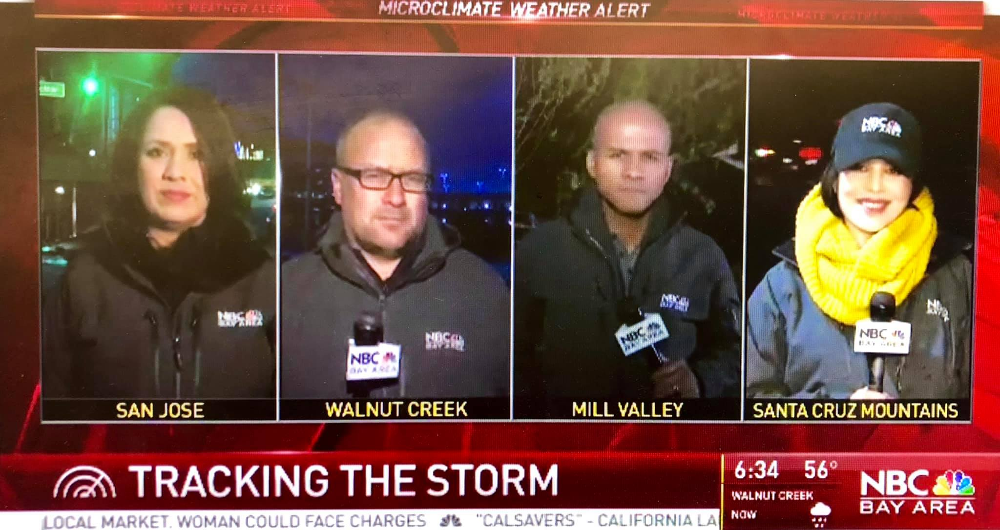


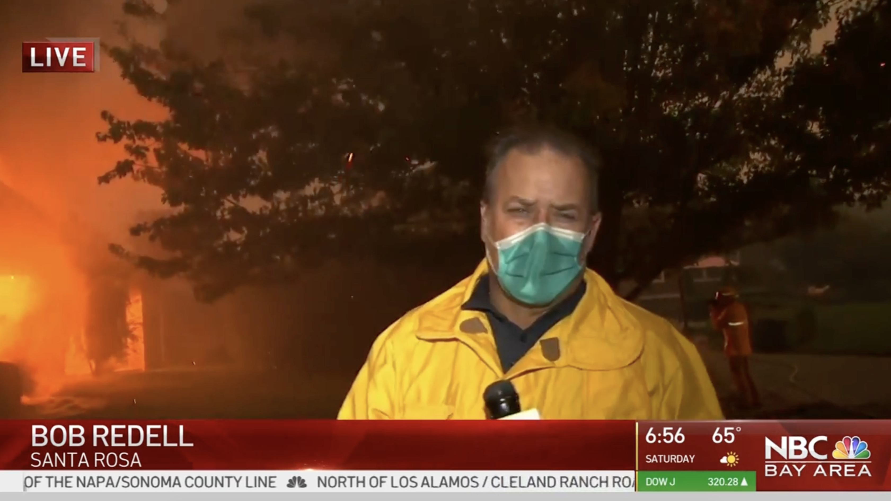
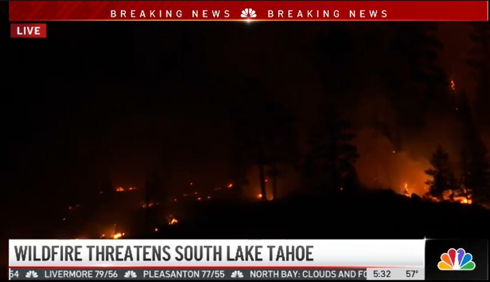

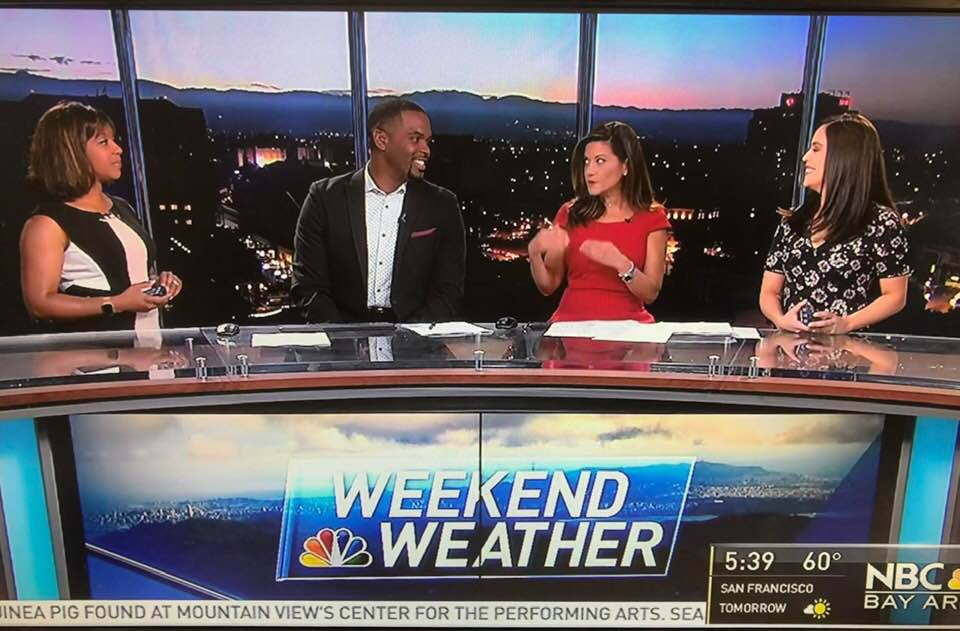
Historic wildfires
Directed extended multi-platform coverage of the 2017 Wine Country fires, the Camp and Carr fires and the Mendocino Complex. Field crews, newsroom operations and digital execution at peak emergency.
Early OTT
We experimented with OTT programming on Apple TV and Roku early, learning what streaming-native audiences would actually watch.
Morning news, reimagined
Rebuilt morning programming through the pandemic as audience habits broke and re-formed, one of the most disruptive moments in modern news consumption.
Atmospheric rivers & flooding
Storm-and-flood coverage across the Bay Area. The winter events that close roads, cut power and put neighborhoods under water.
Silicon Valley
Learned the technology industry from inside its own market: the companies, the money and the way both reshape a region.
Leadership academy
Trained at NBC's leadership academy at West Coast headquarters in Universal City.
A specialty, not a filler segment
Weather touches everyone
I love weather coverage, and I think most newsrooms undersell it. It is the one story that reaches every single person in a market on the same day. The commute, the power bill, the roof, the kid's game, the evacuation order.
I have run coverage of hurricanes and tropical storms in Florida, California's atmospheric rivers and flood events, devastating firestorms across Northern California, and Bay Area microclimates where the forecast changes over a single ridgeline. In Miami I oversaw the weather department and helped launch a new hyper-local weather brand for South Florida.
Done right it is not a segment. It is service journalism with the largest possible audience.

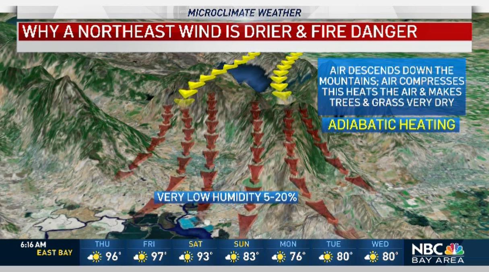
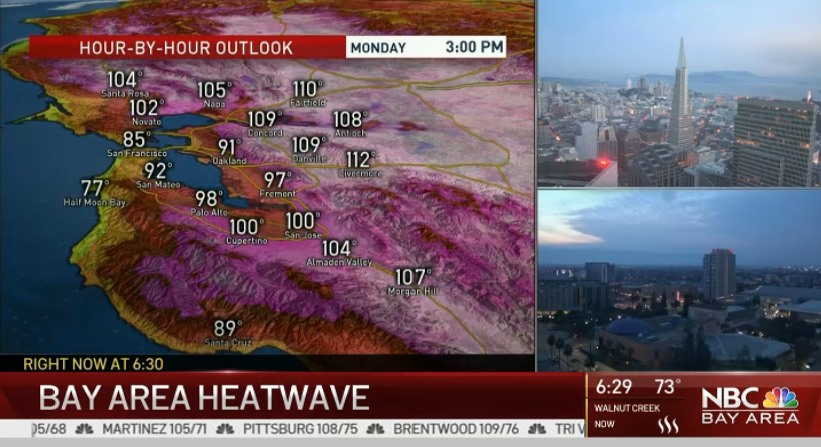
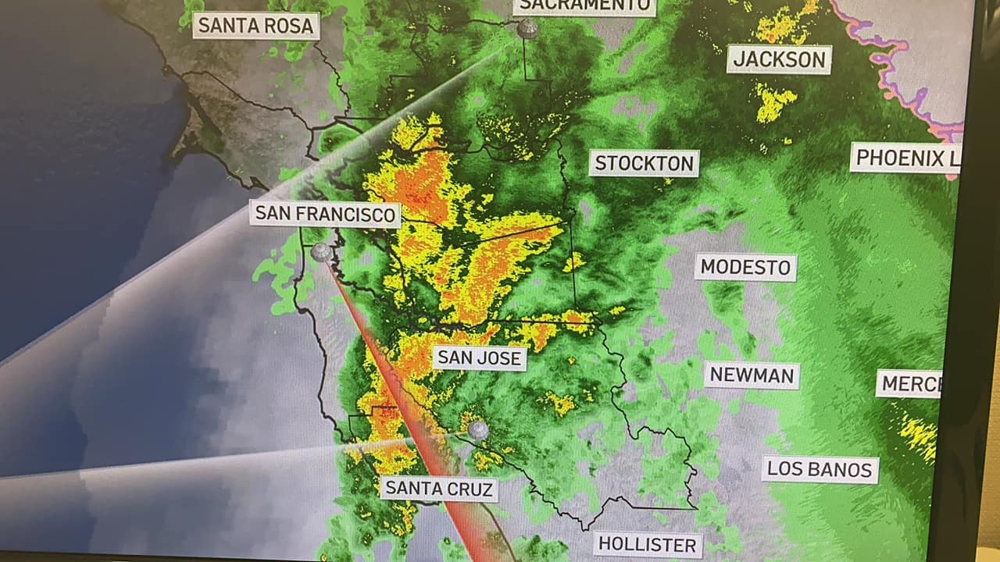
Brand launch · CBS News Miami
NEXT Weather
I helped launch a new hyper-local weather brand for South Florida: new graphics package, new opens, new on-air language, and a coverage posture built around disruptive weather rather than daily temperatures.
A weather brand is a promise about when you will be there. In a market that spends every summer watching the tropics, that promise is the franchise.
NEXT Weather launch · CBS News Miami
Grand Rapids · WOOD TV8
eightWest
I conceptualized and launched it: the show, the production workflow and the brand. A daily lifestyle program that still generates hundreds of thousands of dollars in revenue every year.
The earliest proof of a pattern that runs through everything since: see the gap, design the product, write the workflow, hand it to a team that can run it without me.